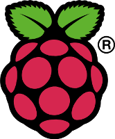
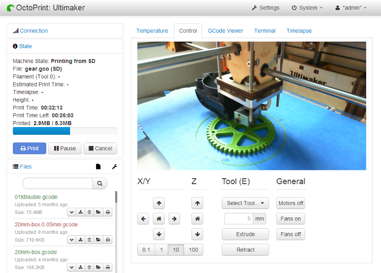
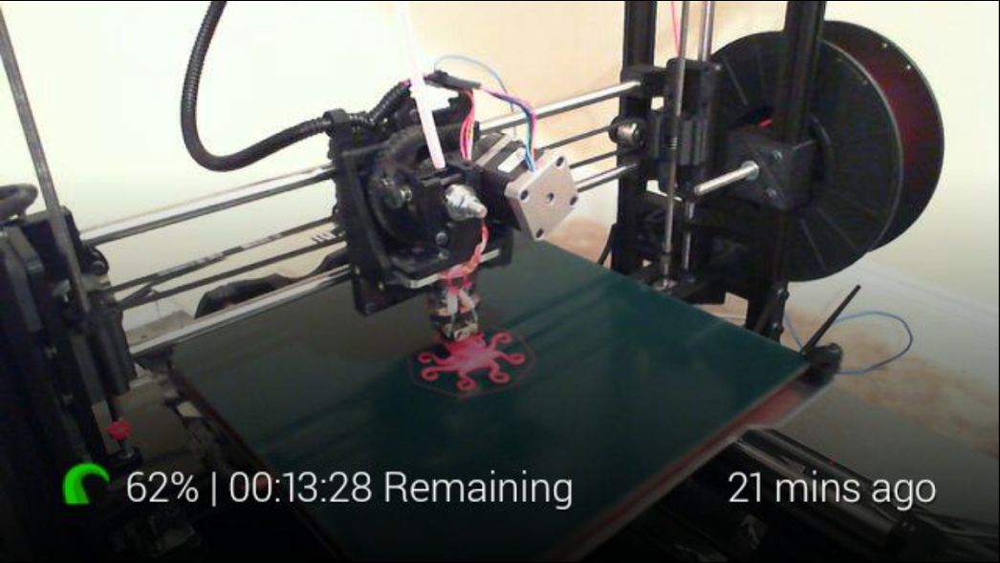
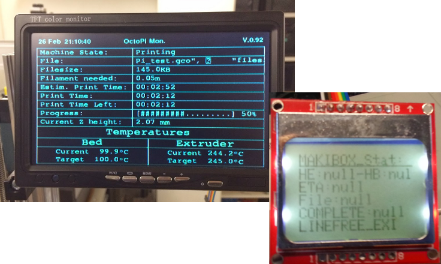
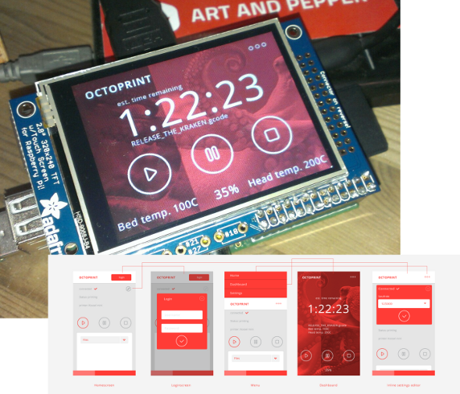

OctoPrint
3D printing unchained

Über mich
- Software-Entwicklerin aus Leidenschaft
- 3D-Drucker-Besitzerin seit Ende November 2012 (und Februar 2014 kam noch einer dazu...)
- Entwicklerin von OctoPrint seit Weihnachten 2012 (dafür sind Ferien doch da, oder?)
Warum noch eine Hostsoftware?
Problem
- PLA/ABS/... riecht komisch
- Steppermotoren (min. 4 davon) sind auch nicht gerade leise
- Braucht viel Platz (Drucker, Filament, Kabelsalat, ...)
- Nimmt den Computer in Beschlag
Lösung
Pack den Drucker einfach wohin, wo er nicht stört, zum Beispiel in den Keller, das Gästezimmer oder ein zweites Badezimmer.
Aber dem Drucker beim Drucken zugucken ist so hypnotisierend und beruhigend, und ich will auch sicher stellen, dass nichts schief geht!
Und da wurde die Idee von OctoPrint geboren!
Was war die Vision?
Nutzbar auf einem Raspberry Pi mit Wifi-Dongle
... damit ich den Drucker nebst Pi einfach irgendwo in der Reichweite meines Wifis hinstellen und ihn dann nutzen kann, ohne zu viel Geld dafür ausgeben zu müssen.
Feedback zum aktuellen Drucker- und Druckstatus (Temperature, Druckjob, etc)
... damit ich immer sicher sein kann, dass das Teil auch macht was es soll.
Inklusive Livebild einer Webcam
... damit ich immer noch dem Drucker bei der Arbeit zugucken kann.
Und das alles bitte im Browser!
... damit ich jederzeit von jedem meiner internetfähigen Geräte nach dem Rechten schauen kann, ohne erst irgendwas installieren zu müssen.
Was kann OctoPrint heute?
- Hochladen und Verwalten von GCODE Dateien sowohl auf dem Pi als auch der SD Karte des Druckers
- Drucken von GCODE Dateien auf dem Pi oder der SD Karte des Druckers, pausieren und abbrechen laufender Druckjobs
- Überwachen des aktuellen Fortschritts, der Temperature und der Druckerkommunikation und Visualisierung des Druckobjektes
- Beobachten des Drucks mittels des integrierten Webcam-Livefeeds und erstellen von Zeitrafferaufnahmen der Druckjobs
- Fernsteuerung der Druckerfunktionen
- Personalisierung der verfügbaren Kontrollmöglichkeiten
- Auslösen eigener Aktionen bei internen Events wie z.B. dem Ende des Druckjobs
- Zugriffsbeschränkung und Nutzerverwaltung damit der Drucker auch im Internet verfügbar gemacht werden kann (auch praktisch für gemeinsam genutzte Drucker z.B. in Hackerspaces)
- Slicing via Cura Engine
Und das alles in einem reaktiven Webinterface mit modernen Webtechnologien, die es erlauben, dass sich das Ganze anfühlt wie eine native Desktopanwendung.

Demonstration!
Spannende Entwicklungen aus der Community
Octowatch für die Pebble Smartwatch
Quelle: github.com/jjg/octowatch

(Dankeschön an +Jason Gullickson)
Google Glass Integration
(Dankeschön an +Adam Bryam)
Remote Slicing
Statt direkt auf dem etwas schwachbrüstigen Pi lieber auf einem leistungsfähigen Rechner im Netz slicen, und zwar vollautomatisch (siehe Post auf der Mailingliste)

(Dankeschön an +Bryan Mayland)
OctoPi Monitor & Simple Octo Display
(Dankeschön an +Christian Hoj & +Mauro Manco)
UI Konzept "KRAKEN"
(Dankeschön an +Gijs van Roij)
Wie geht's weiter?
Vollzeit! :)
OctoPrints Weiterentwicklung wird zukünftig von bq mit einem dedizierten Team unter meiner Leitung unterstützt!
- Support für Mehrfach-Extruder (bereits verfügbar in der Entwicklerversion!)
- Eine mächtige RESTful API um allen möglichen Clients (wie z.B. nativen Mobilanwendungen) die Nutzung von OctoPrint zu ermöglichen (noch in Arbeit aber bereits verfügbar in der Entwicklerversion!)
- Ein modulares Kommunikationsbackend, das es erlauben wird, auf zukünftige Druckereigenheiten zu reagieren
- Interface für Mobilgeräte
- Bessere Slicingunterstützung (weitere Slicer, Cloud, mehr Flexibilität und Usability)
- Pluginsystem um der Kernanwendung jederzeit weitere, spezialisiertere Funktionalität hinzufügen zu können
... und dann gibt es da noch so viele weitere Ideen!

Mal ausprobieren?
Mit OctoPi gibt es eine eigene Distribution für den Raspberry Pi, erstellt von +Guy Sheffer:
Man kann OctoPrint aber natürlich auch einfach so installieren:
Einige 3D Drucker werden bereits mit OctoPrint ausgeliefert!
- PrintrBot GO v2
- Type A Machines 2014 Series 1
Fragen?
Website:
octoprint.org
Github (Source, Bugtracker, Wiki):
github.com/foosel/OctoPrint
Backup
Was man so alles mit dem Eventsystem anstellen kann...
Automatischer Upload von Zeitrafferaufnahmen auf YouTube
events:
systemCommandTrigger:
- event: MovieDone
command: 'youtube-upload --email="<ihrMailadresse>"
--password="<ihrPasswort>"
--title="Timelapse: %(filename)s"
--description="Zeitraffer von %(filename)s, gedruckt und aufgezeichnet
mit OctoPrint"
--category="Tech"
--keywords=OctoPrint "%(data)s"'
(mittels youtube-upload)
Notifications zu Android und iOS schicken
events:
systemCommandTrigger:
- event: PrintDone
command: curl -s
-F "token=<ihrApiToken>"
-F "user=<ihrUserToken>"
-F "message=%(filename)s ist fertig"
-F "title=OctoPrint"
https://api.pushover.net/1/messages.json
(mittels Pushover)
Eine Mail inkl. Foto des fertigen Druckjobs schicken
events:
systemCommandTrigger:
- event: PrintDone
command: curl -o /tmp/printDone.jpg
"http://localhost:8080/?action=snapshot" &&
mpack -s "%(filename)s ist fertig gedruckt!"
/tmp/printDone.jpg <ihreMailadresse>(mittels ssmtp, mailutils und mpack, mehr Details gibt's im Wiki)
Unter der Haube
- Geschrieben in Python (2.7) und Unmengen an Javascript
- Tornado, Flask, PySerial, PyYAML, ...
- jQuery, Knockout.js, Flot, Moment.js, Underscore.js, ...
- Kommunikation zwischen Frontend und Backend mittels AJAX und Sock.js